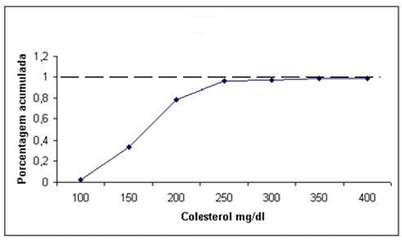
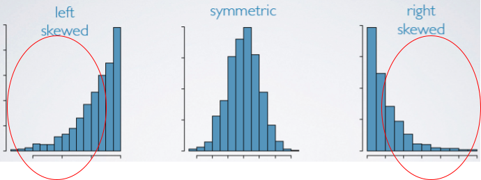
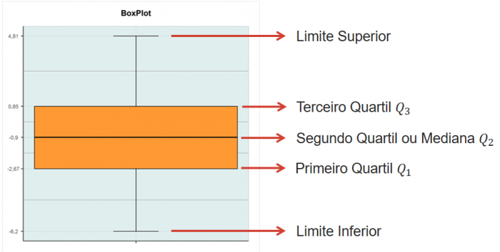

6 Métodos tabulares e métodos gráficos
6.1 Tabelas
Uma tabela resume os dados por meio de linhas e colunas podendo conter, além de linhas e colunas: - Fonte - Chamadas, localizadas no rodapé - Notas - Esclarecimentos acerca dos dados ou apuração - Feitos em algarismos arábicos escritos entre parênteses, e colocados à direita da coluna
Ao preencher células/casas deve-se atentar: - utilizar um traço horizontal (_) quando o valor é zero - utilizar três pontos (…) quando não há dados - utilizar ponto de interrogação (?) quando há dúvida sobre a exatidão do valor - zero (0) quando o valor é muito pequeno para ser expresso pela unidade utilizada
6.2 Tabelas de contingência
As tabelas de contingência são utilizadas quando os dados precisam ser classificados de acordo com dois fatores. Dessa forma as tabelas tem duas entradas, cada uma relativa a um fator.
| Regiões | Meses | Total | ||
|---|---|---|---|---|
| Janeiro | Fevereiro | Março | ||
| Norte | 27 503 | 23 374 | 24 198 | 75 075 |
| Nordeste | 72 377 | 62 618 | 66 158 | 201 153 |
| Sudeste | 100 531 | 91 077 | 96 073 | 287 681 |
| Sul | 35 068 | 31 331 | 33 716 | 100 115 |
| Centro-Oeste | 21 439 | 19 487 | 21 072 | 61 998 |
Fonte: IBGE, 2021
6.3 Definição de Classes
- Determinar o número de classes não sobrepostas
- Em geral, usa-se entre 5 - 20 classes.
- Pode ser adotada fórmula:
- \(\small k - 1+3,3.log(n\))
- n: número total de dados
- k: número aproximado de classes
- \(\small k - 1+3,3.log(n\))
- Determinar a amplitude de cada classe
- Amplitude = (Maior valor - Menor valor)/ Número de classes
- Determinar o limite da classe
6.4 Frequência Absoluta
Por frequência absoluta, entende-se o número de observações correspondente a cada classe.
6.5 Frequência Relativa
A frequência relativa, por sua vez, diz respeito ao quociente entre a frequência absoluta da classe correspondente e a soma das frequências absolutas.
\[FR= \frac{\textrm{Frequência da classe} }{ \textrm{Quantidade total de observações na amostra}}\]
6.6 Frequência acumulada
Soma das frequências das classes anteriores a classe atual analisada.
| Cores | Freq. Abs. | Freq. Rel. | Freq Rel. (%) | Freq. Rel. Ac. |
|---|---|---|---|---|
| Branco | 70 | 0,35 | 35 | 35 |
| Preto | 50 | 0,25 | 25 | 60 |
| Amarelo | 40 | 0,20 | 20 | 80 |
| Azul | 20 | 0,1 | 10 | 90 |
| Cinza | 15 | 0,075 | 7,5 | 97,5 |
| Roxo | 5 | 0,025 | 2,5 | 100 |
| Total | 200 | 1 | 100 | 100 |
6.7 Frequência acumulada relativa
Soma das frequências em relação ao total de amostras
\[FAR= \frac{\textrm{Frequências acumuladas} }{ \textrm{Quantidade total de observações na amostra}}\]
6.8 Polígono de frequências
O polígono de frequência é construído utilizando-se dos pontos médios de cada classe para marcar os pontos nas abscissas. Os pontos das ordenadas são traçados pela frequência de cada classe.
Exemplo de gráfico polígono de frequência
6.9 Histograma
Um histograma é um modelo de gráfico que representa uma distribuição de frequências através de um agrupamento de classes, de forma que se pode contabilizar as ocorrências dos dados em cada classe.
- Útil para visualizar a
- distribuição de medidas
- dispersão
- simetria dos dados
- tendências centrais.
A soma das áreas de todos os retângulos do histograma deve ser igual a 1.
Como fazer um histograma manualmente?
- Ordenar os valores
- Encontrar a amplitude total: A = xmax − xmin. Assim, os intervalos devem cobrir uma faixa de, no mínimo, o valor da amplitude.
- Estimar o número de classes: 2k ≤ n. Sendo que n é igual a raiz quadrada do número total de observações.
- Estimar o tamanho de cada intervalo de classe: C = A/k
- Contar o número de observações que caem em cada intervalo de classe (subintervalo), frequência.
- Determinar a frequência relativa do intervalo: Frequência relativa = frequência/total de observações.
- Construir o gráfico.
Exemplo: Os seguintes dados representam o número de acidentes diários em um complexo industrial (colocados em ordem crescente), durante o período de 50 dias. Represente o histograma desses dados.
6.10 Gráfico Ogiva de Galton - Frequência Acumulada
O gráfico de uma distribuição cumulativa se chama ogiva, onde os dados se encontram no eixo horizontal e as frequências cumulativas, relativas cumulativas ou frequências percentuais cumulativas no eixo vertical. No eixo horizontal são utilizados os pontos extremos de cada classe. 
6.11 Apresentação Ramo-e-folha
A apresentação de ramo-e-folha pode ser usada para mostrar simultaneamente tanto a ordem de classificação como a forma de dados.
Para desenvolver uma apresentação de ramo-e-folha organiza-se primeiramente os dígitos à esquerda de cada valor de dados à esquerda de uma linha vertical. À direita da linha vertical, registrando o último dígito de cada valor de dados.
As folhas podem valer 1, 10, 100 para tornar a apresentação mais legível.
6.12 Coeficiente de Assimetria
O coeficiente de assimetria é o que permite dizer se uma determinada distribuição é assimétrica ou não.
A assimetria da amostra pode ser calculada por:
\[Assimetria =\frac{n}{(n -1)(n -2)} \sum \frac{(x_{i} - \bar{x})}{s}^3\] 
- Inclinação à direita: assimetria positiva
- Média > Mediana
- Inclinação à esquerda: assimetria negativa
- Média < Mediana
6.12.1 R
Exemplo: Os seguintes dados representam o número de acidentes diários em um complexo industrial (colocados em ordem crescente), durante o período de 50 dias. Represente o histograma desses dados.
dados = c(18, 20, 20, 21, 22, 24, 25, 25, 26, 27, 29, 29, 30, 30, 31, 31, 32, 33, 34, 35, 36, 36, 37, 37, 37, 37, 38, 38, 38, 40, 41, 43, 44, 44, 45, 45, 45, 46, 47, 48, 49, 50, 51, 53, 54, 54, 56, 58, 62, 65)
hist(dados, main = "Número de Acidentes Diários", xlab = "Acidentes", ylab = "Frequência") 
## [1] 38.32## [1] 11.58366## [1] 37## [1] 0.2549279- Sk ≈ 0: dados simétricos.
- Tanto a cauda do lado direito quanto a do lado esquerdo da função densidade de probabilidade são iguais.
- Sk < 0: assimetria negativa.
- A cauda do lado esquerdo da função densidade de probabilidade é maior que a do lado direito.
- Sk > 0: assimetria positiva.
- A cauda do lado direito da função densidade de probabilidade é maior que a do lado esquerdo.
O coeficiente de assimetria é 0.2549279.
Como o coeficiente de assimetria é maior que 0, diz-se que a curva apresenta assimetria positiva e a cauda do lado direito da função densidade de probabilidade é maior que no lado esquerdo.
Ao observar também o Histograma, percebe-se que há maior densidade de dados do lado direito.
Outro exemplo
## [1] -0.0052020266.13 Coeficiente de curtose
O coeficiente de curtose é uma medida que caracteriza o achatamento da curva da função de distribuição.
6.13.1 R
Exemplo: Os seguintes dados representam o número de acidentes diários em um complexo industrial (colocados em ordem crescente), durante o período de 50 dias. Represente o histograma desses dados.
dados = c(18, 20, 20, 21, 22, 24, 25, 25, 26, 27, 29, 29,30, 30, 31, 31, 32, 33, 34, 35, 36, 36, 37, 37,37, 37, 38, 38, 38, 40, 41, 43, 44, 44, 45, 45, 45, 46, 47, 48, 49, 50, 51, 53, 54, 54, 56, 58, 62, 65)
hist(dados, main = "Número de Acidentes Diários", xlab = "Acidentes", ylab = "Frequência")
## [1] 38.32## [1] 11.58366## [1] 37## [1] 2.37652CK ≈ 0: Distribuição normal. Chamada de Curtose Mesocúrtica.
CK < 0: Cauda mais leve que a normal. Para um coeficiente de Curtose negativo, tem-se uma Curtose Platicúrtica.
CK > 0: Cauda mais pesada que a normal. Para um coeficiente de Curtose positivo, tem-se uma Curtose Leptocúrtica.
O coeficiente de curtose é igual a 2.37652. Logo, como o valor de CK é maior que 0, a curva é Leptocúrtica.

Outro exemplo
n.sample <- rnorm(n = 10000, mean = 55, sd = 4.5)
#Skewness e Kurtosis
library(moments)
skewness(n.sample)## [1] 0.001526792## [1] 2.958097#Histograma
library(ggplot2)
datasim <- data.frame(n.sample)
ggplot(datasim, aes(x = n.sample), binwidth = 2) + geom_histogram(aes(y = ..density..), fill = 'red', alpha = 0.5) + geom_density(colour = 'blue') + xlab(expression(bold('Dados'))) + ylab(expression(bold('Densidade'))) ## `stat_bin()` using `bins = 30`. Pick better value with `binwidth`.6.14 BoxPlot
Box-plot, ou diagrama de caixa, é possível obter informações sobre vários aspectos dos dados simultaneamente como, outliers, dispersão, tendências centrais, erros padrão e simetria.
Utilizado para avaliar a distribuição empírica dos dados, é formado pelo primeiro e terceiro quartis, juntamente com a mediana.
dados = c(18, 20, 20, 21, 22, 24, 25, 25, 26, 27, 29, 29,30, 30, 31, 31, 32, 33, 34, 35, 36, 36, 37, 37,37, 37, 38, 38, 38, 40, 41, 43, 44, 44, 45, 45,45, 46, 47, 48, 49, 50, 51, 53, 54, 54, 56, 58, 62, 65)
mean(dados)## [1] 38.32## [1] 11.58366## [1] 37## [1] 18 65## 0% 25% 50% 75% 100%
## 18.00 30.00 37.00 45.75 65.006.15 Tabulação Cruzada
A tabulação cruzada (Cross table) é um sumário tabular de dados para duas variáveis. Muito útil para se analisar a relação entre duas variáveis
Por exemplo, a tabela abaixo (incompleta) pode ser sumarizada de forma a tornar mais fácil a leitura:
| Restaurant | Quality Rating | Meal Price ($) |
|---|---|---|
| 1 | Good | 18 |
| 2 | Very Good | 22 |
| 3 | Good | 28 |
| 4 | Excellent | 38 |
| 5 | Very Good | 33 |
| 6 | Good | 28 |
| 7 | Very Good | 19 |
| 8 | Very Good | 11 |
| 9 | Very Good | 23 |
| 10 | Good | 13 |
| Avaliação | Frequência Relativa | Frequência Percentual |
|---|---|---|
| Bom | 0,28 | 28% |
| Ótimo | 0,50 | 50% |
| Excelente | 0,22 | 22% |
| Total | 1 | 100% |
| Preço | Frequência Relativa | Frequência Percentual |
|---|---|---|
| $10-19 | 0,26 | 26% |
| $20-29 | 0,39 | 39% |
| $30-39 | 0,25 | 25% |
| $40-49 | 0,09 | 9% |
| Total | 1 | 100 |
Tabela Cruzada - Avaliação X Preço
| Avaliação | $10-19 | $20-29 | $30-39 | $40-49 | Total |
|---|---|---|---|---|---|
| Bom | 42 | 40 | 2 | 0 | 84 |
| Ótimo | 34 | 64 | 46 | 6 | 150 |
| Excelente | 2 | 14 | 28 | 22 | 66 |
| Total | 78 | 118 | 76 | 28 | 300 |
Tabela Cruzada - Avaliação X Preço - Porcentagens por linha
| Avaliação | $10-19 | $20-29 | $30-39 | $40-49 | Total |
|---|---|---|---|---|---|
| Bom | 50% | 47,6% | 2,4% | 0% | 100% |
| Ótimo | 22,7% | 42,7% | 30,6% | 4% | 100% |
| Excelente | 3% | 21,2% | 42,4% | 33,4% | 100% |
6.15.1 Paradoxo de Simpson
Quando duas ou mais tabulações cruzadas são combinadas ou agregadas, chamamos a tabulação resultante de tabulação cruzada resumida ou tabulação cruzada agregada. Em tais tabulações pode ocorrer um fenômeno chamado Paradoxo de Simpson, no qual, a conclusão baseada na tabulação cruzada agregada é completamente inversa a conclusão baseada nos dados não-agregados.
| Juiz | ||
|---|---|---|
| Veredito | Luckett | Kendall |
| Confirmado | 129 (86%) | 110 (88%) |
| Revertido | 21 (14%) | 15 (12%) |
| Total(%) | 150 (100%) | 125 (100%) |
Conclusão: Juiz Kendall teve menos veredictos convertidos que o juiz Luckett, logo faz um melhor trabalho.
Porém, ao observar os dados menos resumidos.
| Juiz Luckett | Juiz Kendall |
|---|---|
| Veredito | Apelação Comum |
| Confirmado | 29 (91%) |
| Convertido | 3 (9%) |
| Total | 32 (100%) |
Conclusão: Juiz Luckett tem percentualmente, mais confirmacao e menos conversões, em ambas as classes, que o juiz kendall. Logo, Luckett faz uma trabalho melhor.
6.16 Diagrama de Dispersão
Um diagrama de dispersão é uma apresentação gráfica da relação existente entre duas variáveis e uma linha de tendência é uma linha que fornece uma aproximação da relação.
Graficos de dispersão e as diferentes interpretações em relação a correção entre as variáveis
6.17 Métodos tabulares e gráficos de sintetizar os dados

6.18 Análise exploratória de dados
- Regra dos cinco itens
- Menor valor
- Primeiro Quartil (Q1)
- Mediana(Q2)
- Terceiro Quartil(Q3)
- Maior Valor
Todos estes pontos podem ser encontrados num BoxPlot

O limite inferior é dado por Q3+ 1,5 AIQ
O limite superior é dado por Q1- 1,5 AIQ